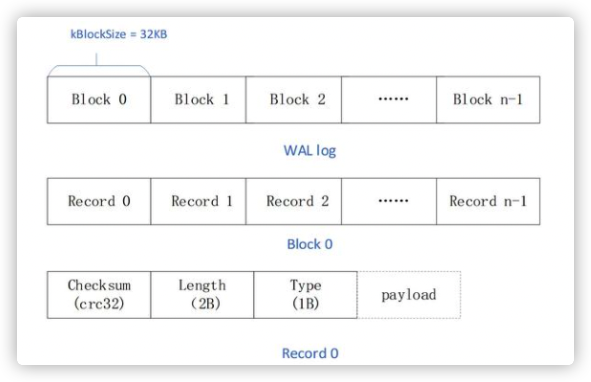
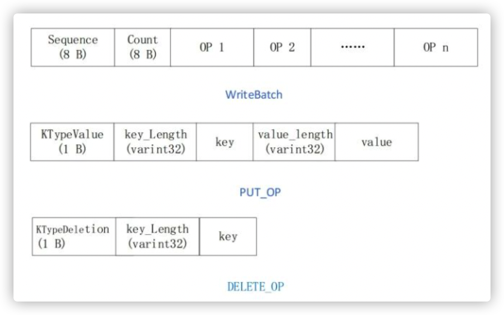

Journal是什么
journal是levedb中的WAL的实现，由于leveldb是将数据先写入内存中再同步到磁盘的，为了防止db异常退出导致内存丢数据，leveldb每次在写入key之前，会利用顺序写文件的方式记录journal。 因此一个journal会记录下一次写入操作的数据。
以下代码分析基于go版本的leveldb
https://github.com/syndtr/goleveldb
 
journal的写入时机
Put写入数据时，最终会走到的writeLocked方法里的以下代码块
// ourBatch is batch that we can modify.
func (db *DB) writeLocked(batch, ourBatch *Batch, merge, sync bool) error {
...
// Seq number.
seq := db.seq + 1
// 在这先写日志
// Write journal.
if err := db.writeJournal(batches, seq, sync); err != nil {
db.unlockWrite(overflow, merged, err)
return err
}
// Put batches.
for _, batch := range batches {
if err := batch.putMem(seq, mdb.DB); err != nil {
panic(err)
}
seq += uint64(batch.Len())
}
...
return nil
}
journal的结构
先分析下journal的实现，在DB结构体中，journal的类型为 *journal.Writer
type DB struct {
...
journal *journal.Writer
// journalWriter storage.Writer
// journalFd storage.FileDesc
...
}
// Writer writes journals to an underlying io.Writer.
type Writer struct {
// w is the underlying writer.
w io.Writer
// seq is the sequence number of the current journal.
seq int
// f is w as a flusher.
f flusher
// buf[i:j] is the bytes that will become the current chunk.
// The low bound, i, includes the chunk header.
i, j int
// buf[:written] has already been written to w.
// written is zero unless Flush has been called.
written int
// first is whether the current chunk is the first chunk of the journal.
first bool
// pending is whether a chunk is buffered but not yet written.
pending bool
// err is any accumulated error.
err error
// buf is the buffer.
buf [blockSize]byte
}
-
成员变量w实际上会在打开DB时被传入一个文件，见以下代码，可以看出写入的journal文件实际是
${dbpath}/%06d.logfunc (fs *fileStorage) Create(fd FileDesc) (Writer, error) { ... of, err := os.OpenFile(filepath.Join(fs.path, fsGenName(fd)), os.O_WRONLY|os.O_CREATE|os.O_TRUNC, 0644) if err != nil { return nil, err } fs.open++ return &fileWrap{File: of, fs: fs, fd: fd}, nil } func fsGenName(fd FileDesc) string { switch fd.Type { case TypeManifest: return fmt.Sprintf("MANIFEST-%06d", fd.Num) case TypeJournal: return fmt.Sprintf("%06d.log", fd.Num) case TypeTable: return fmt.Sprintf("%06d.ldb", fd.Num) case TypeTemp: return fmt.Sprintf("%06d.tmp", fd.Num) default: panic("invalid file type") } } func OpenFile(path string, readOnly bool) (Storage, error) { ... fs := &fileStorage{ path: path, readOnly: readOnly, flock: flock, logw: logw, logSize: logSize, } ... } -
每个journal都有一个序列号seq
-
buf存放着journal的数据
-
一个journal可以拆分为多个chunk, i和j标记当前写入的chunk的左右边界
-
first标记当前写入的chunk是否是第一个chunk
-
pending表示当前的chunk是否还没被写入磁盘
journal的写入
writeJournal
func (db *DB) writeJournal(batches []*Batch, seq uint64, sync bool) error {
// 拿到本次负责写入的writer
wr, err := db.journal.Next()
if err != nil {
return err
}
// 将数据写入writer，此时数据还在内存缓冲区中
if err := writeBatchesWithHeader(wr, batches, seq); err != nil {
return err
}
// 将journal内的数据刷入磁盘
if err := db.journal.Flush(); err != nil {
return err
}
if sync {
return db.journalWriter.Sync()
}
return nil
}
- 通过journal.Next拿到一个writer
- writeBatchesWithHeader将batches写入writer中
journal.Next
const (
blockSize = 32 * 1024
headerSize = 7
)
// Next returns a writer for the next journal. The writer returned becomes stale
// after the next Close, Flush or Next call, and should no longer be used.
func (w *Writer) Next() (io.Writer, error) {
w.seq++
if w.err != nil {
return nil, w.err
}
if w.pending {
w.fillHeader(true)
}
w.i = w.j
w.j = w.j + headerSize
// Check if there is room in the block for the header.
if w.j > blockSize {
// Fill in the rest of the block with zeroes.
for k := w.i; k < blockSize; k++ {
w.buf[k] = 0
}
w.writeBlock()
if w.err != nil {
return nil, w.err
}
}
w.first = true
w.pending = true
return singleWriter{w, w.seq}, nil
}
func (x singleWriter) Write(p []byte) (int, error) {
w := x.w
if w.seq != x.seq {
return 0, errors.New("leveldb/journal: stale writer")
}
if w.err != nil {
return 0, w.err
}
n0 := len(p)
for len(p) > 0 {
// Write a block, if it is full.
if w.j == blockSize {
w.fillHeader(false)
w.writeBlock()
if w.err != nil {
return 0, w.err
}
w.first = false
}
// Copy bytes into the buffer.
n := copy(w.buf[w.j:], p)
w.j += n
p = p[n:]
}
return n0, nil
}
- 当next调用的时候，检查journal里上一个写入的chunk是否处于pending状态，如果是，则fillHeader往buf写入该chunk的header信息
- 更新当前写入chunk的左右边界i，j
- 如果因为本次写入导致buf里的数据已经大于32KB了，则需要将buf里的数据写入到文件里
- 由此可见，journal写入block的时机实际上是在每次写入的过程中判断的
buf[i:i+6]这块位置用来存放chunk的header，buf[i:j]用来存放数据，buf[:written]是实际已经写入的数据
fillHeader
const (
fullChunkType = 1 // 整个buf里只有一个chunk
firstChunkType = 2 // 第一块chunk
middleChunkType = 3 // 位于中间的chunk
lastChunkType = 4 // 最后一块chunk
)
// fillHeader fills in the header for the pending chunk.
func (w *Writer) fillHeader(last bool) {
if w.i+headerSize > w.j || w.j > blockSize {
panic("leveldb/journal: bad writer state")
}
if last {
if w.first {
w.buf[w.i+6] = fullChunkType
} else {
w.buf[w.i+6] = lastChunkType
}
} else {
if w.first {
w.buf[w.i+6] = firstChunkType
} else {
w.buf[w.i+6] = middleChunkType
}
}
// 存入crc校验码
binary.LittleEndian.PutUint32(w.buf[w.i+0:w.i+4], util.NewCRC(w.buf[w.i+6:w.j]).Value())
// 存入chunk的大小
binary.LittleEndian.PutUint16(w.buf[w.i+4:w.i+6], uint16(w.j-w.i-headerSize))
}
- chunk有header，header里记录里chunk的类型
- chunk存放着数据部分的CRC校验码，用于检查数据是否完整
- chunk里存放这数据大小
- 对于buf, 索引0-3存放chunk数据的crc，索引4-5存放chunk数据的大小，索引6存放着chunk的类型
writeBlock
// writeBlock writes the buffered block to the underlying writer, and reserves
// space for the next chunk's header.
func (w *Writer) writeBlock() {
_, w.err = w.w.Write(w.buf[w.written:])
w.i = 0
w.j = headerSize
w.written = 0
}
writeBatchesWithHeader
func writeBatchesWithHeader(wr io.Writer, batches []*Batch, seq uint64) error {
if _, err := wr.Write(encodeBatchHeader(nil, seq, batchesLen(batches))); err != nil {
return err
}
for _, batch := range batches {
if _, err := wr.Write(batch.data); err != nil {
return err
}
}
return nil
}
const (
batchHeaderLen = 8 + 4
)
func encodeBatchHeader(dst []byte, seq uint64, batchLen int) []byte {
dst = ensureBuffer(dst, batchHeaderLen)
binary.LittleEndian.PutUint64(dst, seq)
binary.LittleEndian.PutUint32(dst[8:], uint32(batchLen))
return dst
}
func ensureBuffer(b []byte, n int) []byte {
if cap(b) < n {
return make([]byte, n)
}
return b[:n]
}
- 开辟了一个长度为12的buff, 前8位写入seq, 后4位写入batch的长度。并将该buff写入磁盘
- 将每一个batch的数据写入磁盘
journal.Flush
// Flush finishes the current journal, writes to the underlying writer, and
// flushes it if that writer implements interface{ Flush() error }.
func (w *Writer) Flush() error {
w.seq++
w.writePending()
if w.err != nil {
return w.err
}
if w.f != nil {
w.err = w.f.Flush()
return w.err
}
return nil
}
- 当前journal写入完成了, seq自增
- 检查是否还有pending的chunk，有的话则写入磁盘
writePending
// writePending finishes the current journal and writes the buffer to the
// underlying writer.
func (w *Writer) writePending() {
if w.err != nil {
return
}
if w.pending {
w.fillHeader(true)
w.pending = false
}
_, w.err = w.w.Write(w.buf[w.written:w.j])
w.written = w.j
}
journal的读取时机
我们知道，journal是用于恢复内存数据的，因此在服务宕机重启时会恢复jounal
func (db *DB) recoverJournal() error {
// 读取journal文件并排序
// Get all journals and sort it by file number.
rawFds, err := db.s.stor.List(storage.TypeJournal)
if err != nil {
return err
}
sortFds(rawFds)
// 准备好需要恢复的journal
// Journals that will be recovered.
var fds []storage.FileDesc
for _, fd := range rawFds {
if fd.Num >= db.s.stJournalNum || fd.Num == db.s.stPrevJournalNum {
fds = append(fds, fd)
}
}
var (
ofd storage.FileDesc // Obsolete file.
rec = &sessionRecord{}
)
// Recover journals.
if len(fds) > 0 {
db.logf("journal@recovery F·%d", len(fds))
// Mark file number as used.
db.s.markFileNum(fds[len(fds)-1].Num)
var (
// Options.
strict = db.s.o.GetStrict(opt.StrictJournal)
checksum = db.s.o.GetStrict(opt.StrictJournalChecksum)
writeBuffer = db.s.o.GetWriteBuffer()
jr *journal.Reader
mdb = memdb.New(db.s.icmp, writeBuffer)
buf = &util.Buffer{}
batchSeq uint64
batchLen int
)
for _, fd := range fds {
db.logf("journal@recovery recovering @%d", fd.Num)
fr, err := db.s.stor.Open(fd)
if err != nil {
return err
}
// Create or reset journal reader instance.
if jr == nil {
jr = journal.NewReader(fr, dropper{db.s, fd}, strict, checksum)
} else {
jr.Reset(fr, dropper{db.s, fd}, strict, checksum)
}
// Flush memdb and remove obsolete journal file.
if !ofd.Zero() {
if mdb.Len() > 0 {
if _, err := db.s.flushMemdb(rec, mdb, 0); err != nil {
fr.Close()
return err
}
}
rec.setJournalNum(fd.Num)
rec.setSeqNum(db.seq)
if err := db.s.commit(rec, false); err != nil {
fr.Close()
return err
}
rec.resetAddedTables()
db.s.stor.Remove(ofd)
ofd = storage.FileDesc{}
}
// 将journal的内容回放到memdb
// Replay journal to memdb.
mdb.Reset()
for {
r, err := jr.Next()
if err != nil {
if err == io.EOF {
break
}
fr.Close()
return errors.SetFd(err, fd)
}
buf.Reset()
if _, err := buf.ReadFrom(r); err != nil {
if err == io.ErrUnexpectedEOF {
// This is error returned due to corruption, with strict == false.
continue
}
fr.Close()
return errors.SetFd(err, fd)
}
batchSeq, batchLen, err = decodeBatchToMem(buf.Bytes(), db.seq, mdb)
if err != nil {
if !strict && errors.IsCorrupted(err) {
db.s.logf("journal error: %v (skipped)", err)
// We won't apply sequence number as it might be corrupted.
continue
}
fr.Close()
return errors.SetFd(err, fd)
}
// Save sequence number.
db.seq = batchSeq + uint64(batchLen)
// Flush it if large enough.
if mdb.Size() >= writeBuffer {
if _, err := db.s.flushMemdb(rec, mdb, 0); err != nil {
fr.Close()
return err
}
mdb.Reset()
}
}
fr.Close()
ofd = fd
}
// Flush the last memdb.
if mdb.Len() > 0 {
if _, err := db.s.flushMemdb(rec, mdb, 0); err != nil {
return err
}
}
}
// Create a new journal.
if _, err := db.newMem(0); err != nil {
return err
}
// Commit.
rec.setJournalNum(db.journalFd.Num)
rec.setSeqNum(db.seq)
if err := db.s.commit(rec, false); err != nil {
// Close journal on error.
if db.journal != nil {
db.journal.Close()
db.journalWriter.Close()
}
return err
}
// Remove the last obsolete journal file.
if !ofd.Zero() {
db.s.stor.Remove(ofd)
}
return nil
}
singleReader.Read
type singleReader struct {
r *Reader
seq int
err error
}
func (x *singleReader) Read(p []byte) (int, error) {
r := x.r
if r.seq != x.seq {
return 0, errors.New("leveldb/journal: stale reader")
}
if x.err != nil {
return 0, x.err
}
if r.err != nil {
return 0, r.err
}
for r.i == r.j {
if r.last {
return 0, io.EOF
}
x.err = r.nextChunk(false)
if x.err != nil {
if x.err == errSkip {
x.err = io.ErrUnexpectedEOF
}
return 0, x.err
}
}
n := copy(p, r.buf[r.i:r.j])
r.i += n
return n, nil
}
nextChunk
// nextChunk sets r.buf[r.i:r.j] to hold the next chunk's payload, reading the
// next block into the buffer if necessary.
func (r *Reader) nextChunk(first bool) error {
for {
if r.j+headerSize <= r.n {
checksum := binary.LittleEndian.Uint32(r.buf[r.j+0 : r.j+4])
length := binary.LittleEndian.Uint16(r.buf[r.j+4 : r.j+6])
chunkType := r.buf[r.j+6]
unprocBlock := r.n - r.j
if checksum == 0 && length == 0 && chunkType == 0 {
// Drop entire block.
r.i = r.n
r.j = r.n
return r.corrupt(unprocBlock, "zero header", false)
}
if chunkType < fullChunkType || chunkType > lastChunkType {
// Drop entire block.
r.i = r.n
r.j = r.n
return r.corrupt(unprocBlock, fmt.Sprintf("invalid chunk type %#x", chunkType), false)
}
r.i = r.j + headerSize
r.j = r.j + headerSize + int(length)
if r.j > r.n {
// Drop entire block.
r.i = r.n
r.j = r.n
return r.corrupt(unprocBlock, "chunk length overflows block", false)
} else if r.checksum && checksum != util.NewCRC(r.buf[r.i-1:r.j]).Value() {
// Drop entire block.
r.i = r.n
r.j = r.n
return r.corrupt(unprocBlock, "checksum mismatch", false)
}
if first && chunkType != fullChunkType && chunkType != firstChunkType {
chunkLength := (r.j - r.i) + headerSize
r.i = r.j
// Report the error, but skip it.
return r.corrupt(chunkLength, "orphan chunk", true)
}
r.last = chunkType == fullChunkType || chunkType == lastChunkType
return nil
}
// The last block.
if r.n < blockSize && r.n > 0 {
if !first {
return r.corrupt(0, "missing chunk part", false)
}
r.err = io.EOF
return r.err
}
// Read block.
n, err := io.ReadFull(r.r, r.buf[:])
if err != nil && err != io.EOF && err != io.ErrUnexpectedEOF {
return err
}
if n == 0 {
if !first {
return r.corrupt(0, "missing chunk part", false)
}
r.err = io.EOF
return r.err
}
r.i, r.j, r.n = 0, 0, n
}
}